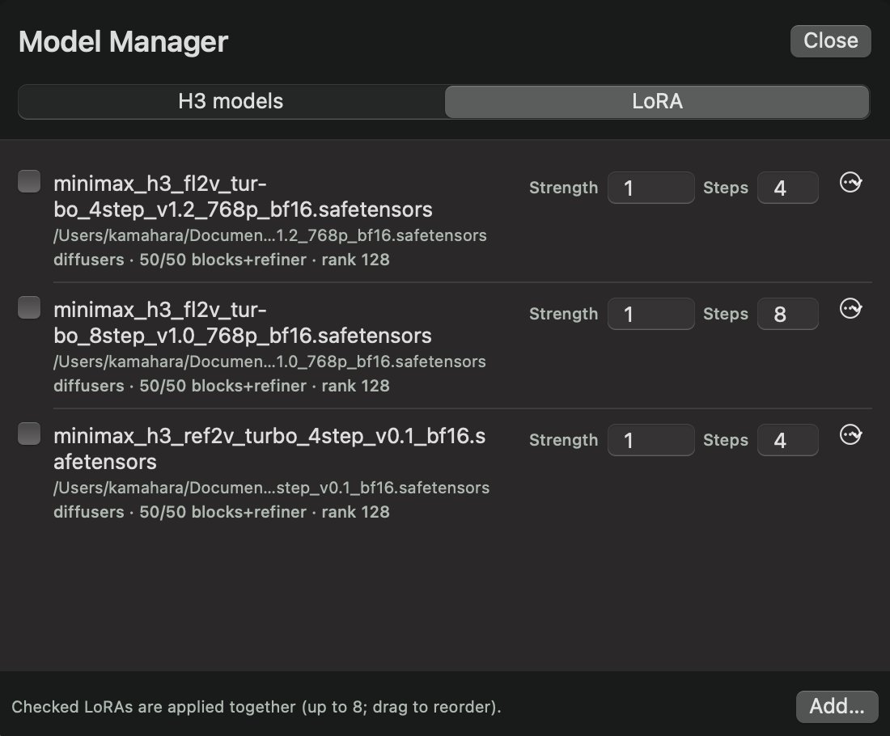

Guide
Once your first video works, move on to image-based generation and batches in a project. This page follows H3cApp v0.4.4 with macOS set to English.
Making video from images
Choose “From images” at the top left of the panel, then one of two ways to use images. They mean quite different things, so pick by what you want.
| First/last image | Reference images, videos and audio | |
|---|---|---|
| What it does | Makes a video that starts from your image. Add a last image too and it leads into that. | Makes a new video that takes after the images, videos and audio (a person, a mood, a sound). The first frame is not necessarily the reference image. |
| Model needed | FL2VA (the one you download first) | Ref2VA (added later). With “Fast (int8 cache)” on an M5-class Mac, build a cache for Ref2VA too. |
| How to set it | Pick an image under “First image” and, if needed, “Also Set the Last Image…” | Add files with “Choose Files…”. They are used in the order added; to change the order, remove and add again. |
| Notes | Images are center-cropped to the shape being generated. | Audio alone can't be the only reference; combine it with an image or video. Large reference videos make generation much longer. |
Examples
- First image: use a landscape photo you took and bring it to life with a prompt like “clouds drift slowly, leaves sway”.
- Reference: add a character image as a reference and make a new scene with a prompt like “the character walks through a park”.
Click a file name in the prompt panel to see the image or video in use. A generated video can also be added as a reference with “Use as Reference” in the preview.
Projects and batches
A project is a folder that keeps the prompt and settings, copies of the reference files, and the generated videos together. It defaults to ~/Movies/H3cApp/<name>. Without an open project, each video is a temporary file that the next generation deletes.
Creating and opening projects
- Use the project menu at the top left (folder icon), or the project menu in the menu bar.
- “New Project…”: name it and choose where to save it. The current prompt, settings and reference files go in.
- “Save as Project…”: with no project open, saves the current prompt and settings together with the video in the preview.
- “Open Project…” and “Recent Projects”: opening a saved project brings its prompt and settings back.
Several videos with the same settings
- Choose a count such as 3 with the count button below the prompt field (1 to 20).
- Generate: videos are made one after another with different seeds and saved in the project. With “Randomness” set to “Fixed”, the seed counts up by one.
- If you choose 2 or more with no project open, “Choose a Project to Generate” appears. Create a “New Project” or pick an “Existing Project”. “Cancel” returns without generating.
- When you pick an existing project whose saved prompt and settings differ from the current ones, the app asks before overwriting them. “Overwrite and Generate” generates with the current prompt and settings and saves them in the project.
Viewing and reusing videos
“Project Videos…” in the project menu opens the list.
- “Show”: shows it in the preview.
- “Restore Settings”: puts that video's prompt and settings back in the panel with its seed fixed, so generating makes the same video again.
- “Use as Reference”: adds that video as a reference video (needs Ref2VA).
- “Delete…”: moves the video and its settings record to the Trash.
“Settings Used…” above the preview shows the settings of the video on screen, and “Back to the Form” puts them back in the panel.
The three speed settings
“Advanced Settings” has three settings that affect speed. Their names are similar, but they are different things.
| Setting | Choices | What changes |
|---|---|---|
| Compute mode | Fast (int8 cache) / Resident (for plenty of memory, no cache) / Low memory (SSD streaming) | How the model is loaded and computed; choose it for your Mac. “Fast (int8 cache)” needs an M5-class GPU. Resident is for Macs with plenty of memory. |
| Speed | Standard (best quality) / Fast / Fastest | Skips part of the work to go faster. Because the shortcuts differ, the result can change even with the same seed. |
| Fast mode (experimental) | On / off (off by default) | A separate feature shown only on supported M5 Macs. It helps most with long videos and may not speed up short or small ones. The result changes even with the same seed. |
Start with the defaults and a small video, and try the speed setting if the wait is too long. Under “Size” in the advanced settings, the app shows a rough estimate for the current settings, based on this Mac's past generations.
Every advanced setting is explained in Advanced settings explained, including “Steps”, “Denoiser reuse” and “Layer count”. Fewer layers can break the audio, so leave them alone until you are comfortable.
Sizes and 2x upscaling
Choose with “Shape” and “Size” below the prompt field. Larger sizes take longer.
| Shape | Small | Medium | Large |
|---|---|---|---|
| Square | 256×256 | 512×512 | 768×768 |
| Landscape | 448×256 | 672×384 | 960×544 |
| Portrait | 256×448 | 384×672 | 544×960 |
- 2x upscale: turn on “Upscale 2x” in the Size menu to enlarge the generated video 2x in each direction with high-quality resampling. It is not AI super-resolution that draws in detail. The upscale itself takes very little time. Example: Landscape, Large upscaled 2x is 1920×1088 (not exactly 1920×1080).
- Custom size: turn on “Use a custom size” under “Size” in the advanced settings to enter the finished width and height. The generated size is limited to 600,000 pixels.
- Length: choose 1 to 15 seconds. Because of how the model works, the actual length comes out a little longer (choosing 5 s gives about 5.2 s).
Writing prompts
Short sentences covering what is on screen, how it moves, the camera and the sound tend to work well.
- What is there: A small orange cat on a wooden floor
- How it moves: plays with a ball of yarn, gentle movement
- Camera: Static camera / Slow push-in camera
- Sound: Soft room ambience, no speech, no music
You can describe the sound in the prompt too. If you don't want speech or music, say so, as in “no speech” and “no music”.
The model provider's prompt writing guide is also useful.
Using add-on models (LoRA, optional)
A LoRA is a small extra weight file applied on top of MiniMax H3. There are “Turbo” LoRAs that let you generate in far fewer steps, and LoRAs trained for a particular look or motion. You don't need any LoRA to make videos with H3cApp. Try them once you're comfortable with the basics.
Getting a LoRA file
H3cApp doesn't download LoRAs, so get a .safetensors file made for MiniMax H3 yourself. LoRAs for other video models won't work.
For faster generation you can use Minimax-h3-Turbo by lightx2v (Hugging Face). The file names tell you what each one is for:
- Names with
fl2v: for “From text” and “First/last image” - Names with
ref2v: for “Reference images, videos and audio” 4step/8step: the step count to generate with that LoRA
The app can't tell in advance which mode a file was made for. Turn on the file that matches the mode you're using.
Registering and using one

- Open “Model Manager” in the toolbar and choose the “LoRA” tab.
-
Click “Add…” and choose the
.safetensorsfile. If the file can be loaded, its format, the number of blocks it covers and its rank are shown. If it can't be loaded for MiniMax H3, the reason is shown instead. - Turn the LoRA on. Use its checkbox in the Model Manager, or turn it on under “Add-on models (LoRA)” in “Advanced Settings”. “Strength” multiplies its effect; blank means 1.
- Generate as usual. A LoRA that is on is used for every generation until you turn it off.
Turbo LoRAs and the step count
A Turbo LoRA is trained to generate in a fixed number of steps (4 or 8). If the file name contains something like 4step, the app reads that number and sets “Steps” to it when you turn the LoRA on. When you turn it off, the steps go back, unless you changed them yourself.
- With a 4-step LoRA, going from the default 20 steps to 4 makes generation much faster. The result looks different from generating without the LoRA.
- Quality drops at any other step count than the one it was trained for. If you change the steps by hand, the note in the advanced settings turns red.
- If the step count can't be read from the file name, type it in the “Steps” field in the Model Manager. Leave it blank for a regular LoRA.
- Turn on only one Turbo LoRA. Stacking several makes the effect too strong.
Good to know
- You can stack up to 8 LoRAs. Their effects add up.
- LoRAs work with all three compute modes. Each step takes a little longer for the LoRA.
- The LoRAs that were on and their strengths are recorded in a video's settings and in projects. If you open a project whose LoRA isn't registered in the Model Manager, the app tells you it can't be used.
- “Delete” in the Model Manager only removes the LoRA from the list; the file stays.
Supported formats: diffusers / PEFT, ComfyUI and kohya (BF16 / F16 / F32). Not every LoRA works. See LoRA in the README for details.
Each LoRA comes with its own terms from whoever distributes it. Check them together with the MiniMax H3 license (see Licenses and terms).
For advanced users
Local API
H3cApp has an HTTP API reachable only from the same Mac (127.0.0.1), for driving generation from scripts. See API in the README.
Building from source
Not needed to use the app. Developer instructions are in Building from source in the README.